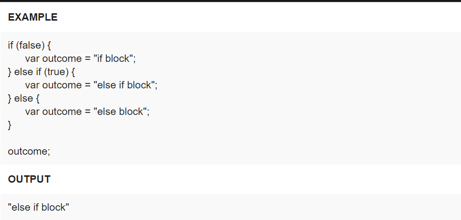
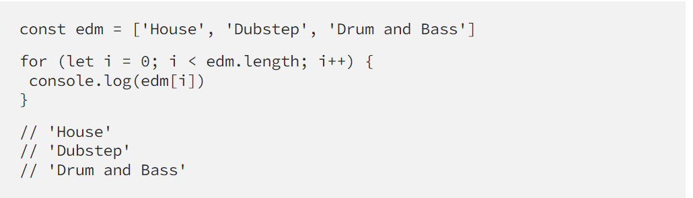

Javascript, HTML and CSS are the basic three languages for building a website. For example, HTML is the skeletion of a house, CSS is the color/ deisgn of a house. Javascript is to execute the function inside the house for exaple: turn on the light in the night time.
Control flow is the order in which the computer run the codes from the top to the bottom. However., there are some structures whihc can change the order the code such as conditionals and loops. Control flow is like the daily rountine of our daily life. Loop and conditions are like the breakfast in our daily life, we cant move to lunctime untill we finish the breakfast.
Conditional statements control behavior in JavaScript and determine whether or not pieces of code can run. There are multiple different types of conditionals in JavaScript including: “If” statements: where if a condition is true it is used to specify execution for a block of code. “Else” statements: where if the same condition is false it specifies the execution for a block of code. “Else if” statements: this specifies a new test if the first condition is false. For example:
Loops are iteration statements that will keep running until there is either nothing left to loop over, or if the condition becomes false.Such as: "For" loop. The for is a conditional loop, which means that it runs based on if a certain condition is true. As long as it stays true, the code is going to keep executing.Such as For loop, While lopp and Do-while-loop. An example of For loop as shown below:
The Document Object Model (DOM) is a programming interface for web documents.The DOM is not part of the JavaScript language, but is instead a Web API used to build websites. JavaScript can also be used in other contexts.For example, if I want to interface the <"h1"> element in HTML file. I can run "document.querySelector(h1)" in Javascript
Objects represent a special data type that is mutable and can be used to store a collection of data (rather than just a single value). Arrays are a special type of variable that is also mutable and can also be used to store a list of values.
A function is almost like a mini-program that we can write separately from the main program, without having to think about the rest of the program while we write it. This allows us to reduce a complicated program into smaller, more manageable chunks, which reduces the overall complexity of our program